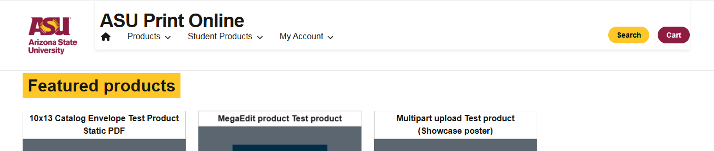
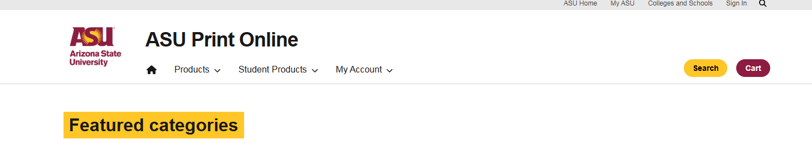
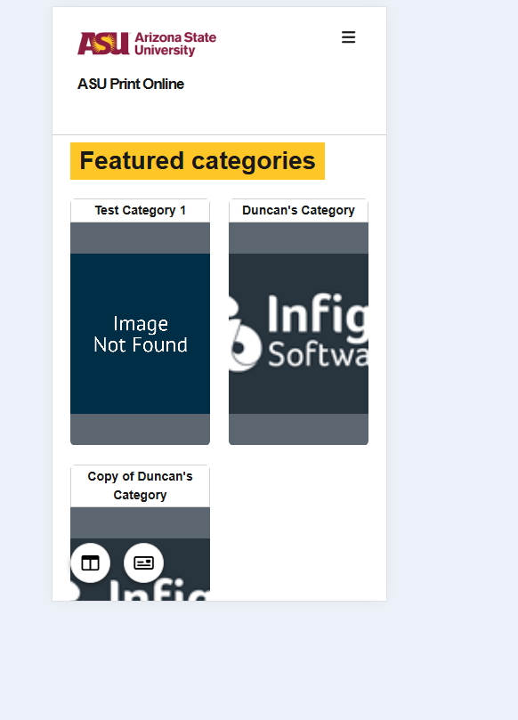
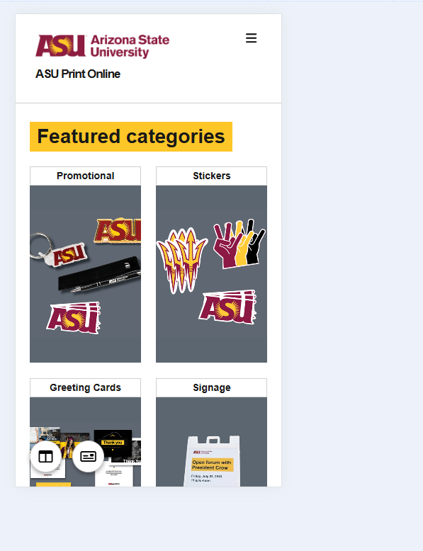
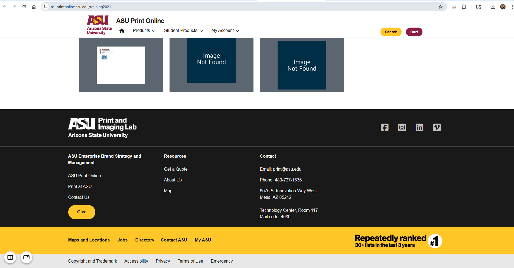

ASU Print Site Navigation Fix
Brand source & constraints
The design originated directly from ASU's official brand system, so colors, typography hierarchy, and logo treatment were non-negotiable. Maroon #8C1D40 and Gold #FFC629 remained the primary brand colors, paired with the Pitchfork logo mark and the Arizona State University wordmark lockup.
Typography
The site title "ASU Print Online" stayed large and bold, navigation links used a medium-weight hierarchy, and the CTA buttons remained pill-shaped in ASU gold and maroon to preserve the official system.
Constraint
The storefront platform injected ASU's global navigation through an external JavaScript file. That created a layout conflict with the eCommerce platform's own header, resulting in logo stacking, overlapping elements, broken spacing, and clipped actions at different viewport widths.
Desktop layout audit
Screenshots across multiple desktop widths showed three states: a wide viewport where the layout was stable, a mid-width state where the logo began overlapping the "ASU Print Online" title and surrounding nav, and a narrow desktop state where the logo floated on top of the title while the cart button clipped out of view.
Process framing
This case study functions as a diagnostic before-and-after: the broken mobile and mid-width states document the original navigation conflict, and the final responsive views show the repaired header and category layout after the cleanup.
Mobile issues
On smaller screens, the category grid collapsed poorly, thumbnails cropped inconsistently, and the responsive hamburger pattern worked but shifted the Search and Cart placement. The goal was to stabilize the header behavior and improve the category layout without breaking ASU's brand fidelity.
Process
First, I referenced ASU's brand guidelines and locked the palette, wordmark treatment, and hierarchy. Then I audited the eCommerce platform's native header structure, identified where the external JS utility nav was colliding with it, and tested mobile behavior in DevTools, including iPhone SE and tablet breakpoints.
What was resolved
The logo and title no longer overlap at any tested viewport width, the external JS nav now sits cleanly in its own utility row on desktop, the mobile hamburger collapse remains stable at iPhone SE width, and the category grid now falls from three columns to two on mobile while keeping the ASU maroon, gold, and white system intact.

This mobile preview highlights the cleaner featured-category presentation after the navigation fix, showing the improved two-column product grid and more stable branded header treatment.

This wide desktop state shows the intended structure working correctly: logo and title aligned, full navigation visible, pill CTAs in brand colors, and the header holding together without collisions.

The mid-width audit helped isolate where the injected global nav began competing with the storefront header, which was the key breakpoint for overlap and spacing failures.

This mobile capture documents the broken state before the fix, where the category presentation felt cramped and the storefront needed a more reliable responsive collapse pattern.

After the adjustment, the storefront holds a cleaner two-column category layout on mobile, keeping the header stable while giving the product groupings more usable spacing.

This broader page view confirms the header fix in context and shows how the storefront navigation now sits more cleanly within the larger ASU-branded page framework.